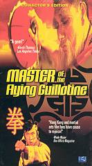

Relive the golden era of martial arts cinema. The vault now reaches deeper into archive-hosted kung fu, bruceploitation, rough cuts, and regional action detours that are still freely streamable online.

A blind Imperial assassin armed with the deadly flying guillotine hunts down a one-armed martial arts master during a tournament. Wildly inventive fights, a Krautrock soundtrack, and one of the most iconic weapons in kung fu cinema history.
▶ Watch NowInterviews, bruceploitation cash-ins, and Bruce Lee-adjacent archive pulls that are still streamable through the Archive.